차원 균열: 벨레스
1~4인이 봉인석을 방어한 뒤 마지막 웨이브에서 보스 벨레스를 처치하는 콘텐츠 — 웨이브 사이에는 전투 조건과 정수 획득량을 바꾸는 '기운'을 선택합니다
지키고, 고르고, 끝낸다
세 방향의 침입에 대응하는 역할 분담, 전투 부담과 보상을 비교하는 기운 선택, 파티의 의사결정을 마무리하는 시간 제한을 하나의 진행으로 연결했습니다.
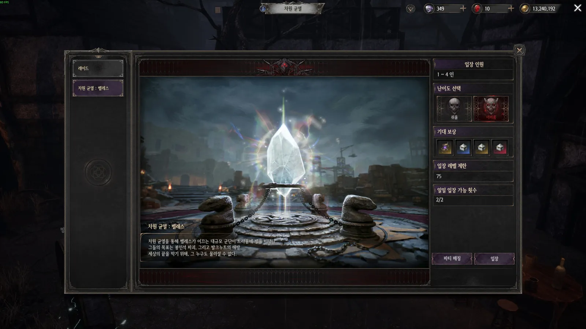
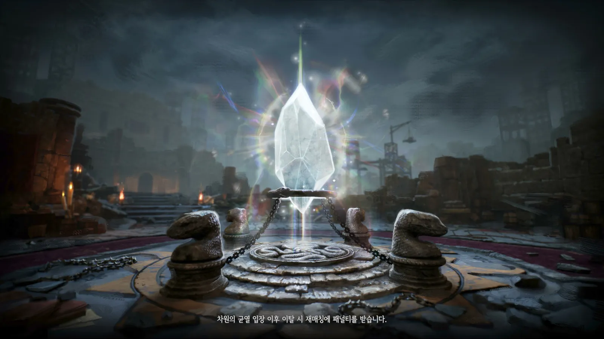
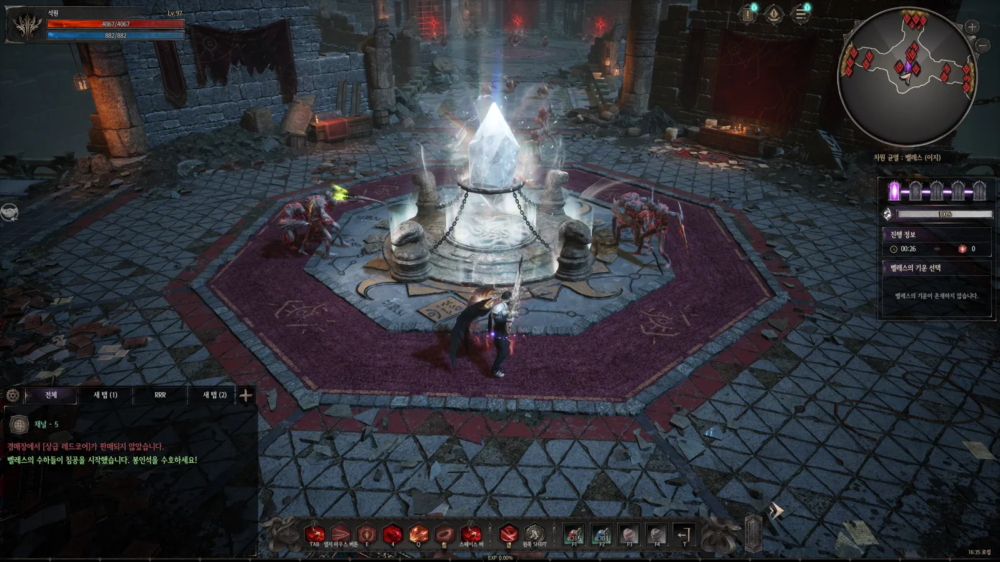
세 방향의 침입, 네 명의 대응 역할
일반 웨이브는 공동의 방어 대상을 지키고, 마지막 웨이브는 벨레스 처치로 목표를 전환합니다.
파티가 함께 지켜야 할 봉인석
봉인석이 파괴되면 도전이 종료됩니다. 개인의 생존뿐 아니라 공통 목표의 방어가 필요합니다.
세 방향의 침입과 역할 분담
4인 파티에서는 각 방향을 맡은 인원 외에 한 명이 압박이 큰 방향을 지원할 여지를 두었습니다.
현재 상황을 읽는 HUD
웨이브 진행과 봉인석 체력을 함께 표시해, 남은 진행과 방어 상태를 확인하도록 했습니다.
1~4 웨이브 '전체 처치'에서 5 웨이브 '지정 보스 처치'로 완료 조건을 바꿔, 위치를 지키는 역할과 전황에 따라 이동하는 지원 역할이 함께 생기도록 유도했습니다.
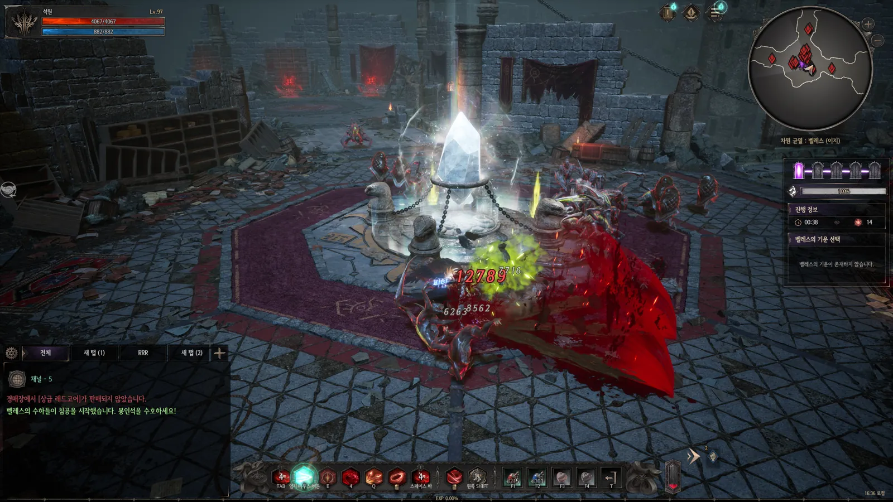

보상만 고르지 않고, 감당할 전투 조건까지
기운 후보를 슬롯별로 추첨하고, 전투 부담과 정수 증가량을 함께 제시해 현재 파티에 맞는 선택을 유도했습니다. 정수 증가량이 높더라도 파티에 불리한 조건일 수 있습니다.
| 단계 | 몬스터 피해 증가 | 정수 획득 증가 |
|---|---|---|
| Ⅰ | +5% | +0% |
| Ⅱ | +10% | +20% |
| Ⅲ | +20% | +40% |
동일 계열의 단계별 수치 예시 · 항상 함께 등장하지는 않습니다.
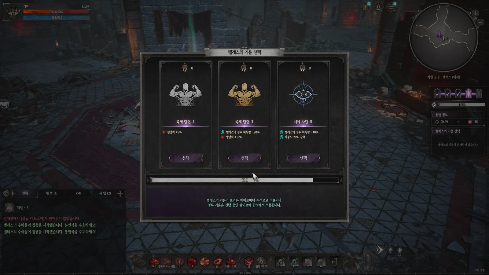
결정 정책 — 의견 수렴과 진행 보장
| 상황 | 처리 |
|---|---|
| 평상시 | 파티원은 투표, 파티장은 최종 선택을 담당 |
| 시간 초과 | 최다 득표 후보를 적용 |
| 동률 | 동률인 후보 중 무작위로 확정 |
| 무투표 | 세 후보 중 무작위로 확정 |
파티장이 결정권을 갖되 파티원의 의견이 드러나도록 하고, 누구도 고르지 않아도 콘텐츠가 멈추지 않도록 모든 분기에서 진행을 보장했습니다.
선택 조정과 지급 확정을 구분
모은 정수 안에서 보상 종류와 수량을 조정하고, 확정 버튼으로 지급을 요청합니다. 종료 전에는 정수 소멸을 안내합니다.
보상 비교
요구 정수를 보상과 함께 표시해 원하는 보상의 비용을 비교
보유량 안에서 수량 조정
정수 초과 선택은 제한하고, 수량을 바꾸며 교환 조합을 조정
잔여량으로 확인
수량 변경에 따라 남은 정수를 갱신해 추가 교환 가능 여부 확인
선택 후 지급 확정
한 개 이상 선택해야 '보상 받기' 활성화 — 빈 선택의 확정 방지
소멸을 확인하고 종료
닫기 시 미사용 정수의 소멸을 안내해, 더 고를지 종료할지 판단
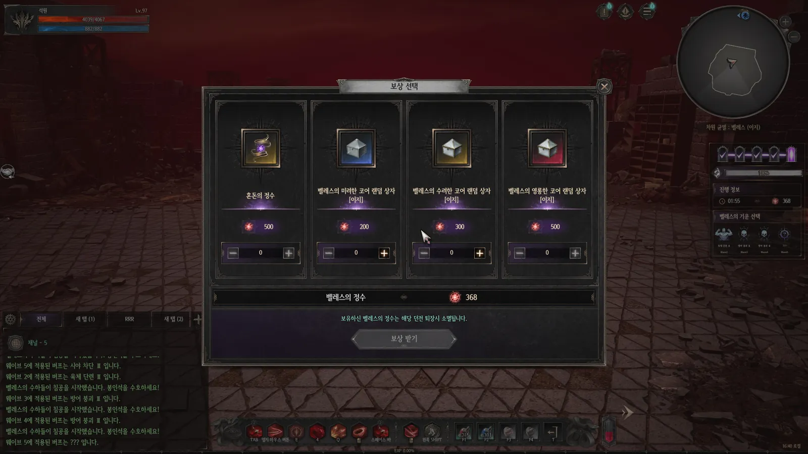
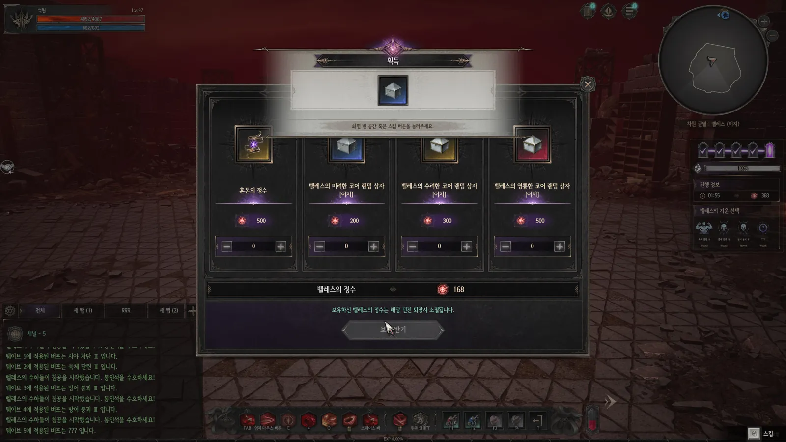
난이도 · 웨이브 · 선택 · 보상
난이도 설정(CoContentConfig) 아래 웨이브·기운 후보·보상을 분리하고, 진행 조건과 효과 유지 범위를 각각 데이터로 정의했습니다.
진행 조건
GoalType / GoalArg로 일반 몬스터 전체 처치와 지정 보스 처치를 구분
효과 대상 · 유지 범위
같은 ConfigKey + Step에서 Slot별 후보를 SelectRatio로 추첨. TargetType1로 대상, IsPerWaveReset1로 웨이브 종료 시 초기화 여부 결정 — 웨이브 Key를 직접 참조하지 않음
교환 비용 · 지급
RequirePoint / ItemKey로 교환 비용과 지급 아이템을 연결
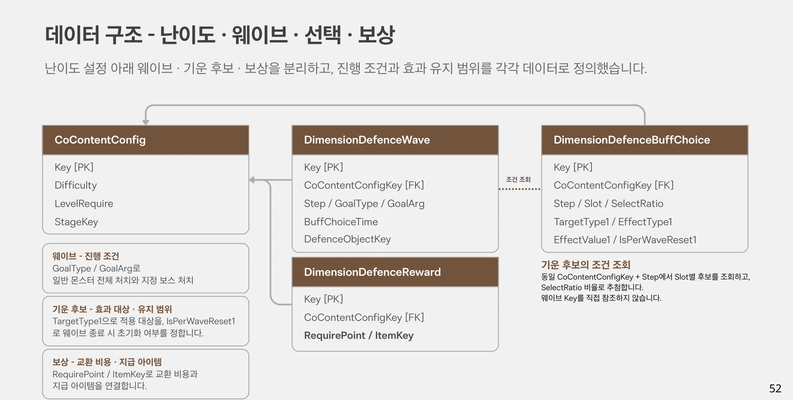
보스 컨셉 요건과 스킬 몽타주 세팅
레이드 보스가 아니라 웨이브 디펜스의 마지막을 장식하는 보스이므로, 패턴 강도는 낮추고 외형에서 직관적인 위압감이 느껴지도록 컨셉 요건을 정리했습니다.
- 배경과 어우러지는 보스 — 등장 스테이지의 배경과 조화되는 외형
- 기믹보다 '육신의 위압감' — 패턴 수가 적은 만큼 복잡한 콘셉트 없이 직관적으로 강해 보이는 디자인
- 크기 약 10m — 2m 캐릭터 대비 압도감을 주는 스케일
- 스킬 2종 — 스킬 데이터 작성과 UE4 애니메이션 몽타주 세팅을 직접 진행
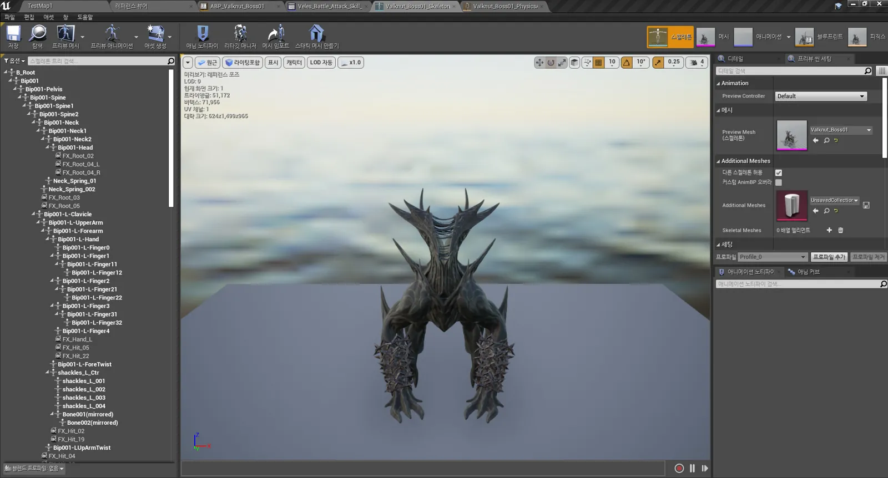
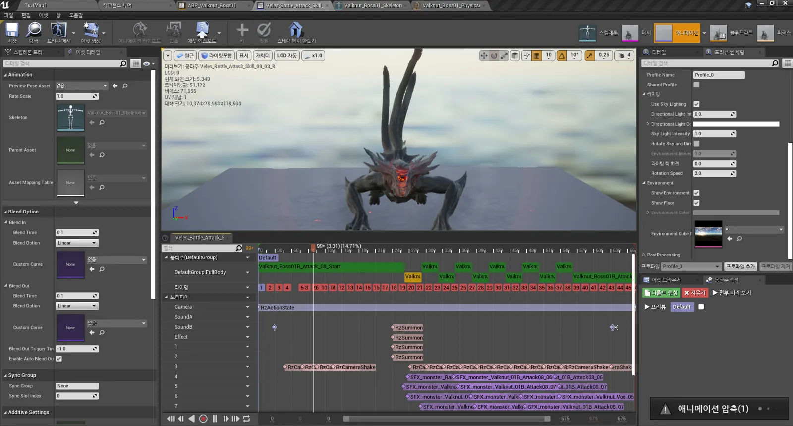
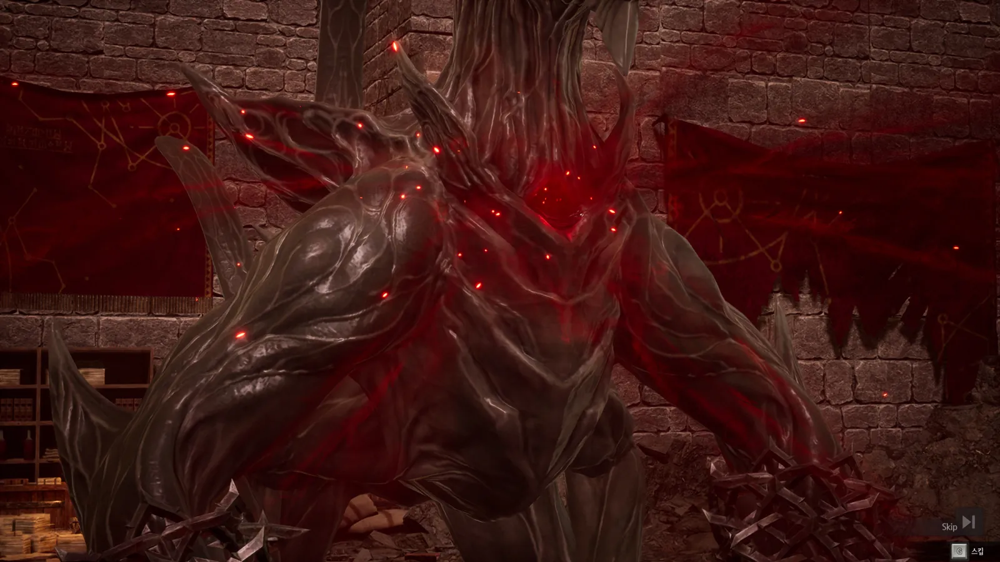